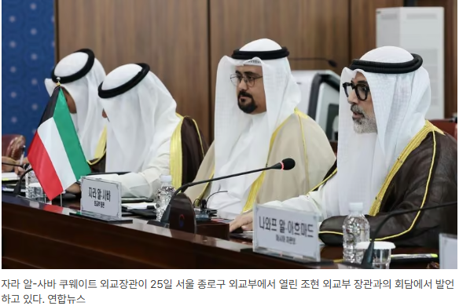

https://www.fnnews.com/news/202608251550046528
쿠웨이트에 대한 천궁 수출 가능성은 높다. 이날 양자회담을 진행한 쿠웨이트 자라 외교장관은 쿠웨이트를 28년간 장기 통치했던 셰이크 자베르 알-아흐마드 알-자베르 알-사바 제13대 국왕의 아들이자 현 국왕의 친조카다. 왕족이 직접 방한해 방산외교 분야 협력에 나섰다는 점에서 추진동력도 확실한 셈이다.
다만 천궁-II의 연간 생산량은 8개 포대로, 주문량이 포화상태에 달한 상태인 것으로 전해졌다. 이로인해 천궁 생산라인에 대한 증설이 검토되고 있다.
쿠웨이트에 천궁-II가 수출된다면, 이는 대한민국 방위산업이 중동 걸프 지역의 사실상 표준 방공 무기체계로 자리매김했음을 의미한다
기존 UAE, 사우디아라비아, 이라크에 이어 도입을 논의중인 쿠웨이트와 카타르까지 천궁-II 도입을 확정 지을 경우, 중동 걸프 협력회의(GCC) 주요국을 중심으로 총 5개국이 하나의 'K-방공망 테두리'를 완성하게 된다.
이렇게 돈 내고 사가라고
천도체 ㄷㄷ